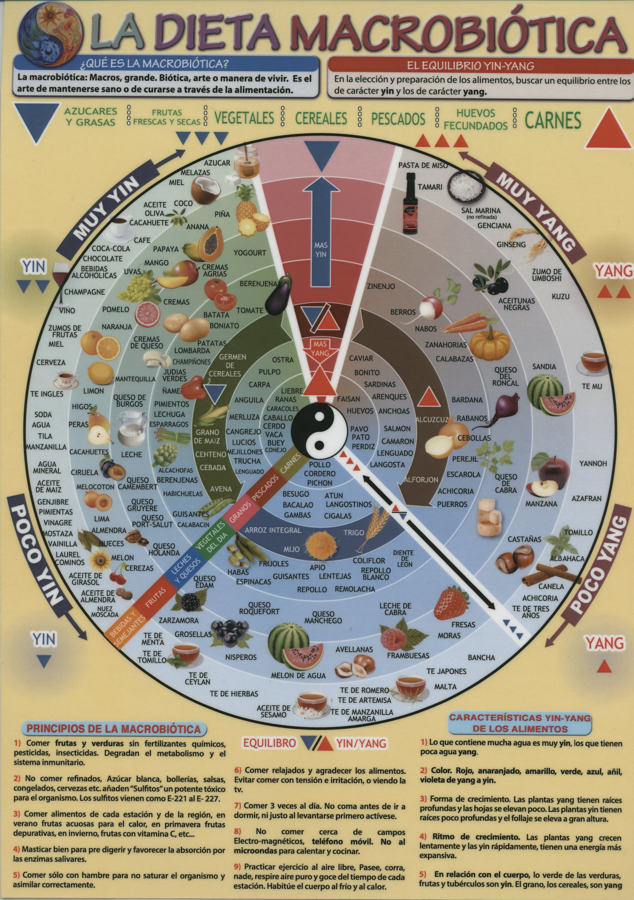
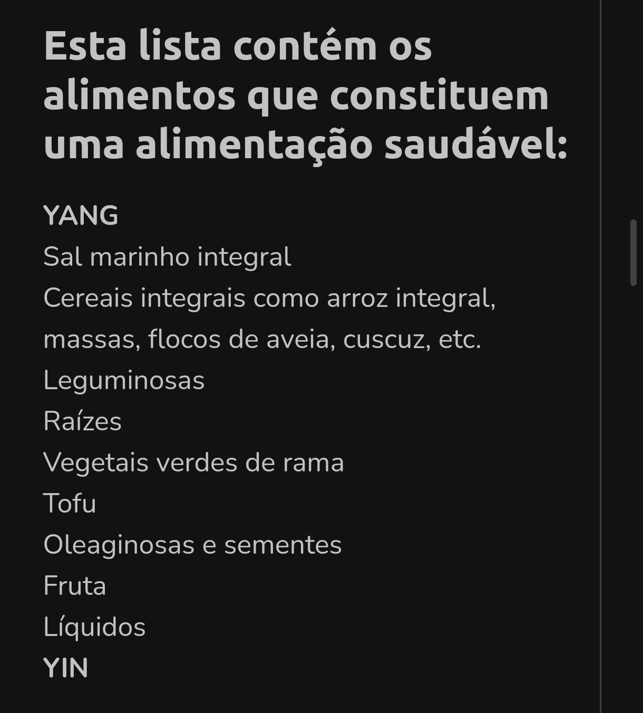
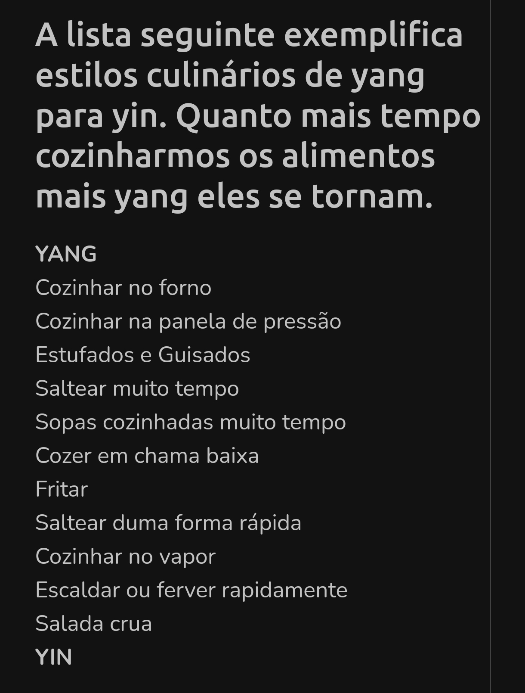
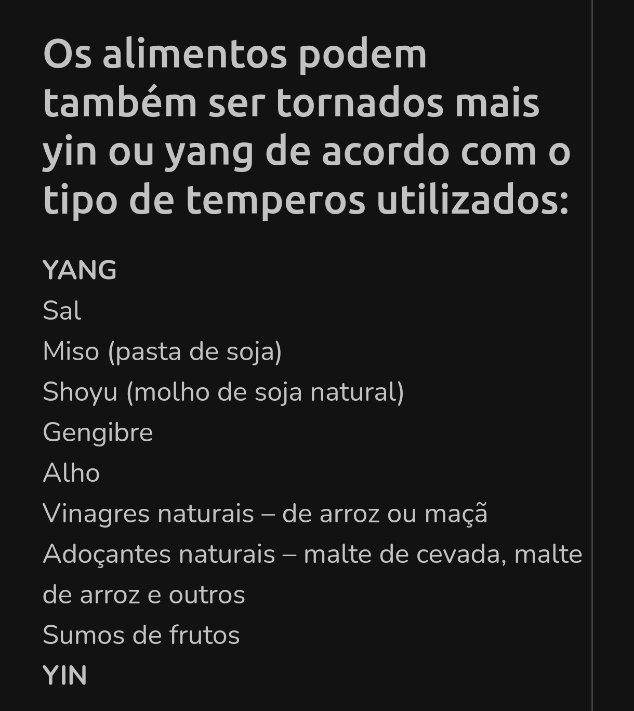
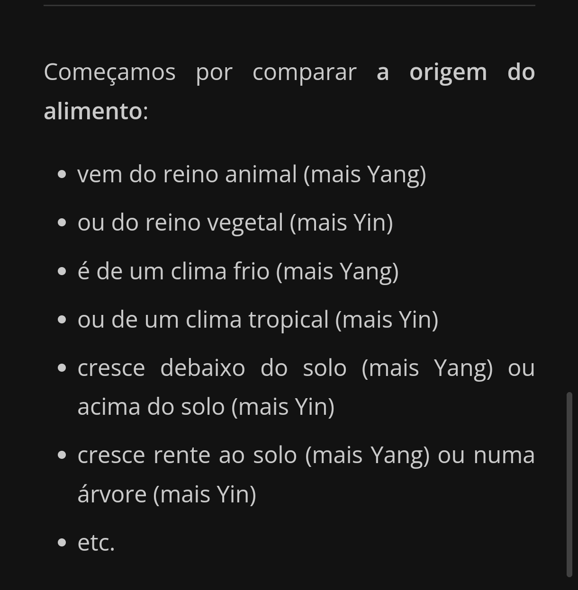
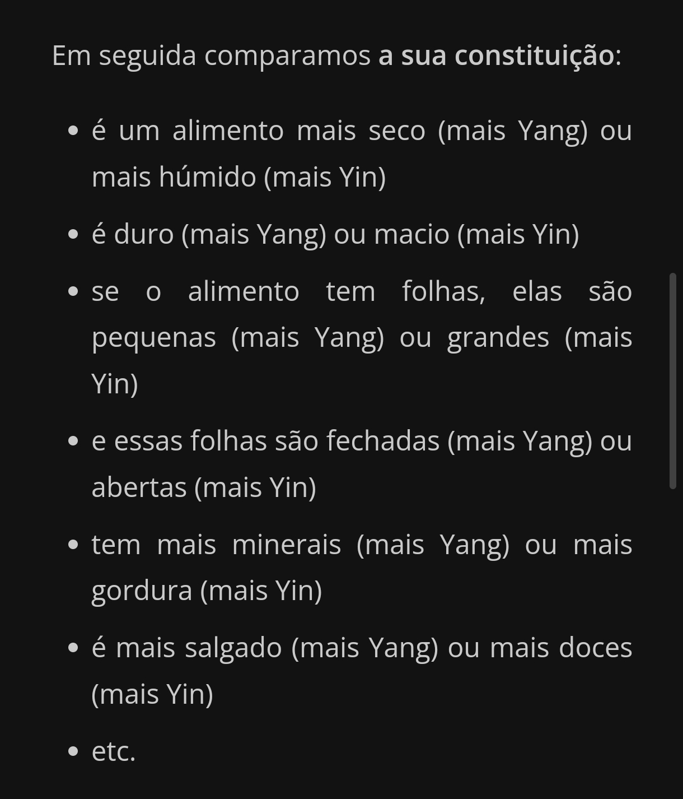
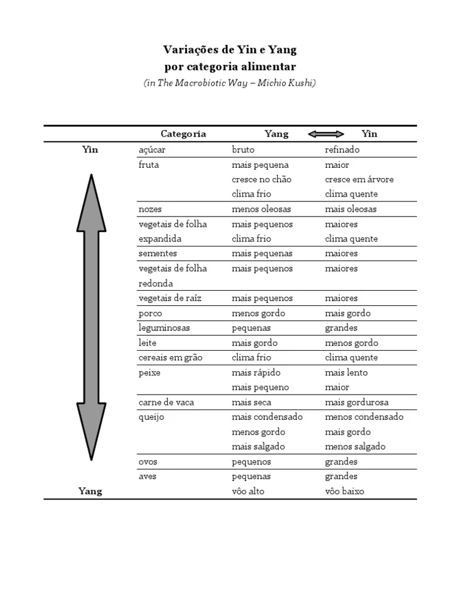

"Você nunca sabe que resultados virão da sua ação.
Mas se você não fizer nada, não existirão resultados."
Mahatma Gandhi
Link para Foto da minha alimentação macrobiótica veggi saudável,
e link para vídeos no final das fotos dessa página.
Alimentação Macrobiótica - Yin / Yang







Tabela para Equilibrar os alimentos em suas refeições


- Vídeos de Alimentação Saudável e Saúde
- Fotos da Minha Alimentação Saudável
▲